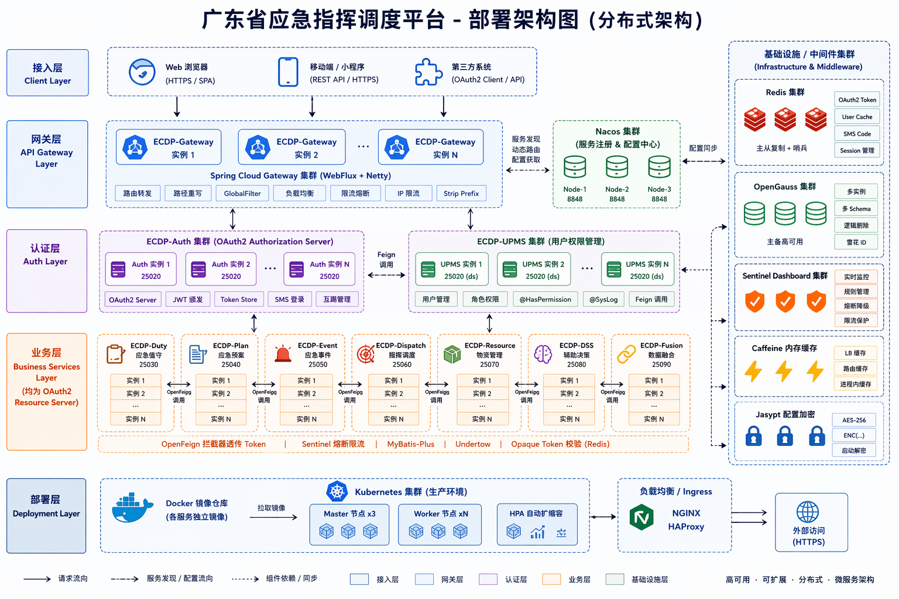

ECDP-Cloud · 新人培训 / 技术分享 / 项目讲解
广东省应急指挥调度平台
项目结构与技术规范详解
90 分钟 · 两大阶段 · 按 S 进入演讲者视图 · T 切换主题 · ← → 翻页
ECDP-Cloud 平台广东省应急指挥调度平台 · 微服务版本
agenda · 两大阶段
今天我们主要过这两大部分
PHASE 01 · 项目结构
从总体架构入手，明确模块职责与技术栈
技术栈模块职责工程组织多层BOM设计
Maven ProfileNacos配置管理版本管理部署策略
≈ 36 min · S4–S14
PHASE 02 · 技术规范
统一编码风格、明确协作机制与落实质量守护
编码规范接口规范数据库数据签名
服务通信消息队列异常错误码日志Git 规范
≈ 50 min · S15–S26
opening · why
为什么要微服务、为什么有规范
⚡ 建设背景
以多部门协同为纽带，贯通值班值守、事件接报、预案管理、调度指挥与数据融合全链条，打造平急结合的一体化智慧应急体系。
- 运行连续性要求高
- 多用户、多租户体系
- 业务数据安全要求较高
- 与部路网系统统一用户中心体系
🎯 8 大架构目标
- 业务解耦 · 统一入口
- 统一认证 · 统一权限
- 数据安全 · 弹性扩展
- 运维可控 · 持续演进
"统一" = 网关 / Auth / UPMS / Nacos 各管一段
🧭 7 大设计原则
- 业务域驱动拆分
- 公共能力下沉
- 接口契约前置
- 配置外部化
- 安全内建 · 部署可替换 · 渐进式治理
所有规范 = 原则的落地
phase 01 · 总体架构
七层架构 + 一条请求链路
客户端接入层后台管理端 · 移动端 · 指挥大屏 · 第三方系统 · 运维入口
网关与认证层ecdp-gateway 路由/JWT/限流 · ecdp-auth OAuth2
平台服务层ecdp-upms-biz 用户/组织/角色/菜单/权限/日志
业务服务层duty · plan · event · dispatch · resource · dss · fusion · flood-inspection
基础服务层ecdp-third-party 第三方集成 · ecdp-workflow 工作流
公共能力层ecdp-common-* core/data/security/feign/log/encrypt/sensitive…
数据与中间件层OpenGauss · Redis · Nacos · RabbitMQ · XXL-JOB · S3
客户端 → 网关(验 JWT) → 业务服务(@HasPermission) → 数据库 → ApiResult
phase 01 · 项目结构
模块划分与职责
| 7 个聚合模块 | 内容 |
|---|
| ecdp-common | 公共能力聚合（13 子模块） |
| ecdp-apis | API 契约聚合（*-api + apis-bom） |
| ecdp-business | 业务服务聚合（8 个） |
| ecdp-services | 基础服务（third-party/workflow） |
| ecdp-upms | 权限（biz + api） |
| ecdp-auth | 认证授权中心 |
| ecdp-gateway | API 网关 |
| 微服务 | 端口 |
|---|
| gateway / auth | 28088 / 25010 |
| upms-biz / duty | 25020 / 25030 |
| plan / event | 25040 / 25050 |
| dispatch / resource | 25060 / 25070 |
| dss / fusion | 25080 / 25090 |
| flood-inspection | 25100 |
| third-party / workflow | 25510 / 25520 |
三大类职责：
API 契约模块 仅 Feign/实体/DTO/枚举，不含业务
业务微服务 Controller/Service/Mapper，承载业务域
公共模块 通用能力沉淀，不反向依赖业务
phase 01 · 技术架构
技术栈总览（每个组件都有它的位置）
运行时
JDK 17
Spring Boot 3.5.13 · Spring Cloud 2025.0.1 · SCA 2025.0.0.0
注册 / 配置
Nacos 3.x
服务发现 + 配置中心，配置热更新
网关 / 认证
Gateway 4.3.2
OAuth2 + JJWT 0.12.5
数据访问
OpenGauss 6.0+
MyBatis-Plus 3.5.16 + mybatis-plus-join 1.5.5
缓存 / 锁
Redis 7.x
Caffeine 本地缓存 · Redisson 3.39.0 · Lock4j 2.2.7
消息 / 调度
RabbitMQ 3.x
XXL-JOB 3.4.0 · Sentinel 1.8.x 熔断
文档 / 工具
Knife4j 4.5.0
SpringDoc 2.8.14 · Hutool 5.8.44 · Jasypt 3.0.5
依赖治理
两层 BOM
ecdp-common-bom + ecdp-apis-bom
phase 01 · 业务架构
应急事件处置闭环
事件接报event
→
研判分级dss
→
预案匹配plan · resource
→
调度派发dispatch
→
处置跟踪event
→
反馈复盘dss · fusion
| 业务域 | 服务 | 业务域 | 服务 |
|---|
| 平台支撑 | upms | 值守/预案 | duty / plan |
| 事件/调度 | event / dispatch | 资源/决策 | resource / dss |
| 融合/防汛巡查 | fusion / flood-inspection | 外部集成/流程 | third-party / workflow |
phase 01 · 依赖版本治理
依赖版本如何定义：两层 BOM
根 pomdependencyManagement 依次 import 5 个 BOM
ecdp-common-bom第三方依赖 + 12 个 ecdp-common-* 模块版本
ecdp-apis-bom各业务 ecdp-*-api 契约模块版本
官方 BOMspring-boot / spring-cloud / spring-cloud-alibaba dependencies
| 代表版本（common-bom 收录） |
|---|
| hutool 5.8.44 · mybatis-plus 3.5.16 |
| opengauss-jdbc 5.0.0 · postgresql 42.2.27 |
| redisson 3.39.0 · lock4j 2.2.7 · xxl-job 3.4.0 |
| knife4j 4.5.0 · springdoc 2.8.14 · gateway 4.3.2 |
| jjwt 0.12.5 · okhttp 4.12.0 · TTL 2.12.6 |
<dependency>
<groupId>cn.hutool</groupId>
<artifactId>hutool-core</artifactId>
</dependency>
phase 01 · 多环境配置
Maven Profile 环境划分（namespace 分系统 · group 分环境）
| Profile | 用途 | Nacos 地址 | namespace | group |
|---|
| dev（默认） | 本地开发 | 127.0.0.1:8848 | fetch | local |
| nas_local | 局域网本地 | 192.168.0.166:8848 | ecdp | local |
| 71.95_test | 测试环境 | 10.0.71.95:8848 | ecdp | local |
| 11.14_prod | 生产环境 | 10.169.11.14:8848 | ecdp | local |
Maven Profile编译期选择器
→
@nacos.xxx@占位符注入
→
namespace系统隔离 ecdp/fetch
→
group环境隔离 local/jx/…
phase 01 · 配置中心
Nacos 配置统一管理（三层配置 · 无 bootstrap）
spring:
application:
name: ecdp-dispatch
cloud:
nacos:
username: @nacos.username@
discovery:
server-addr: @nacos.server-addr@
namespace: @nacos.register.namespace@
config:
import:
- optional:nacos:application.yml
- optional:nacos:${spring.application.name}.yml
- optional:nacos:common-ds.yml
| 层级 | 配置 | 维护 |
|---|
| ① 系统级 | application.yml 全局共享 | 架构组 |
| ② 服务专属 | ${服务名}.yml 端口/线程池 | 服务负责人 |
| ③ 公共组件 | common-ds.yml / s3 / rabbitmq | 组件负责人 |
没有 bootstrap.yml —— SCA 2025 用 spring.config.import 替代；新增模块禁止引入。
optional: 前缀 = Nacos 无该配置不报错；每个文件可独立热更新；禁止按环境建配置（group 已隔离）。
phase 01 · 配置工程化
配置工程化实践（类型安全 · 加密 · 打包）
@ConfigurationProperties(prefix = "flood.summary")
public class FloodSummaryProperties {
private Integer windowHours = 2;
}
password: ENC(加密后的密文)
mvn clean package -DskipTests -P 71.95_test
| 实践 | 要求 |
|---|
| 配置绑定 | @ConfigurationProperties，禁 @Value |
| 敏感加密 | Jasypt ENC(...)，已全局引入 starter |
| 瘦身打包 | 第三方依赖放 project-libs（maven.thin.skip=false） |
phase 01 · 部署
部署形态：源码 · 容器化 · 中间件
🔧 源码部署
- JDK 17 · -Xms4g -Xmx4g
- GC 用 -XX:+UseZGC
- 依赖外置 -Dloader.path=./project-libs
- run.sh 启停 · 部署根目录在服务器
🐳 容器化
- Docker Compose：7 启用 + 6 预留
- network_mode: host · restart always
- 挂载 jar / config / project-libs / logs
- run.sh up|start|stop|logs|down
📦 中间件
- Nacos 3.2.0 · 控制台 18080
- RabbitMQ 4.2 · 管理 15672（延迟插件）
- MinIO · 控制台 9001（S3 兼容）
- 数据目录挂载持久化
| 排障三板斧 | 查什么 |
|---|
| NoClassDefFoundError | project-libs 缺 API jar 或版本旧 → 重新构建同步 |
| Load balancer 无实例 | 目标服务未注册到 Nacos → status / logs 排查 |
| 进程已存在 | stop 后未真正退出 → ps -ef | grep <svc> 验证 |
phase 01 · 部署架构图
一张图看懂系统物理部署

入口 → ecdp-gateway → auth / upms / 业务服务 → 中间件（Nacos · OpenGauss · Redis · RabbitMQ · XXL-JOB · S3）
phase 01 · 演进
演进路线与当前待办
NOW
当前能力
Spring Cloud AlibabaNacosOpenFeignRedisRabbitMQDocker Compose
NEXT
增强方向
Sentinel 熔断降级可观测性（监控/链路/告警）一体化签名对接
LATER
远期演进
Kubernetes 化数据治理安全体系增强文档体系化
接手前待办：① Feign 熔断降级 fallbackFactory 生产前必补 ② 一体化签名待对接（external-signature-enabled:false） ③ 存量表 app_info 等未按前缀 ④ Nacos 密码明文。
phase 02 · AGENTS.md 总纲
编码规范总纲（所有专项的上游）
命名
- 类 PascalCase · 方法 camelCase
- 常量全大写下划线
- DTO 以 Request/Response 结尾
- 异常以 Exception 结尾
注释 · 强制
- 类 / 方法 / 属性必须注释
- 类注释 @author @since
- 属性注释与 @Schema 一致
- 禁止废话注释
Service / Mapper
- @RequiredArgsConstructor 构造注入
- 禁止 @Autowired 字段注入
- 业务异常只抛 ServiceException
- ID 用 IdGenerator.idKey() 雪花
DTO / Request / Response
- Serializable + serialVersionUID
- 校验分组 ValidGroup.Insert/Update
- 日期 @JsonFormat · 敏感 @JsonIgnore
集合使用
- 条件查询用 LambdaQueryWrapper
- Stream .toList()
- Map 去重用 toMap(...,(a,b)->a)
代码复用 · 审查
- 方法 ≤ 50 行
- 类 ≤ 500 行
- 重复代码 > 3 处必须抽取
- 硬编码提取为常量
phase 02 · 协作规范
Git 分支与提交规范
{类型}({范围}): {描述}
feat(upms): 新增用户角色管理功能
fix(dispatch): 修复任务派发状态异常
refactor(common): 抽取幂等工具类
| 分支 | 说明 |
|---|
| main | 生产代码，禁止直接推送 |
| develop | 开发主分支 |
| feature/ecdp-xxx-{描述} | 新功能开发 |
| 类型 | 含义 |
|---|
| feat / fix | 新增 / 修复 |
| docs / style | 文档 / 格式 |
| refactor / perf | 重构 / 性能 |
| chore | 构建 / 工具 |
phase 02 · 接口设计规范 1/2
REST 约定与统一响应
{ "code": 200, "message": "操作成功",
"success": true, "data": {},
"timestamp": 1713619200000 }
IPage<SysUserResponse> pageEntity(PageRequest req);
return ApiResult.success(DataUtil.convert(page));
| 方法 | URL |
|---|
| 按 ID 查 | GET /findById |
| 分页 / 列表 | POST /page · /list |
| 新增 / 修改 | POST /save · PUT /update |
| 删除 / 状态 | DELETE /delete · PUT /updateStatus |
| 端 | 前缀 |
|---|
| 后台管理 | /backend |
| 移动端 | /mobile |
| 指挥大屏 | /screen |
| 内部 Feign | /inner |
| UPMS 特殊 | 不用 /backend，直接 /system/user/page |
phase 02 · 接口设计规范 2/2
校验 · 权限 · 返回值（安全红线）
public ApiResult<SysUser> get() { ... }
public ApiResult<SysUserResponse> get() {
}
@HasPermission("umps:system:user:list")
| Swagger 三件套 | 作用 |
|---|
| @Operation | Controller 方法 |
| @Schema | DTO 类与字段 |
| @ParameterObject | GET 参数展开 |
| 校验 | 附件存储 |
|---|
ValidGroup.Insert/Update
POST/PUT 强制 @Validated |
数组格式；url 禁存完整域名
无附件返回 [] |
禁止返回 Object / Map / Entity —— Entity 含签名字段，序列化出去 = 签名泄露。
phase 02 · 数据库设计规范
表设计 · 必须字段 · 硬性禁止
| 模块 | 表前缀 | 模块 | 表前缀 |
|---|
| upms | sys_ | 组织 | org_ |
| 值守/预案/事件 | duty_ plan_ event_ | 调度/资源 | dispatch_ resource_ |
| 防汛 | flood_ | 融合/决策 | fusion_ dss_ |
| 必须字段（任何表不得省略） |
|---|
| {entity}_id 雪花主键 · create_time · update_time · deleted |
| 双签名四件套：local_signature · local_signature_version · signature · signature_version |
关联表 {a}_{b}_rel · 日志表 {module}_access_log
@Data
@TableName("sys_role")
public class SysRole extends BaseEntity {
@TableId(value = "role_id", type = IdType.ASSIGN_ID)
private Long roleId;
@Schema(description = "角色名称")
private String name;
@TableLogic
@JsonIgnore
private Boolean deleted;
}
phase 02 · 重点 · 数据签名设计规范
为什么需要两道签名
写入双签落库
→
本地优先通过即信
→
本地失败才调外部
→
外部兜底逐条验签
→
均失败判定篡改
| 维度 | 本地签名 local_signature | 一体化签名 signature |
|---|
| 算法 / 密钥 | SM2 国密 · 本地管理 | 平台决定 · 外部管理 |
| 批量验签 | 支持，上限 500 条 | 不支持，逐条 HTTP |
| 用途 | 列表展示高频验签 · 优先 | 导出 / 审计 / 合规 · 兜底 |
String buildSignatureKey(String orgCode, String orgName);
@Override
public String buildSignatureKey(String orgCode, String orgName) {
String code = orgCode != null ? orgCode : "";
String name = orgName != null ? orgName : "";
return code + SignatureConstants.SEPARATOR + name;
}
phase 02 · 异常处理规范
异常处理与5 位错误码
11001 AUTH_CREDENTIALS_INVALID 认证凭据无效
11101 TOKEN_INVALID 令牌无效
11201 PERMISSION_DENIED 无访问权限
20001 ORG_NOT_FOUND 组织不存在
20101 TASK_NOT_FOUND 任务不存在
{ "code": 20001, "message": "组织不存在",
"success": false, "data": null }
| 异常 | HTTP |
|---|
| ServiceException 业务异常 | 200 + code |
| 参数校验 | 400 |
| 认证失败 / 无权限 | 401 / 403 |
| 资源不存在 / 系统异常 | 404 / 500 |
⚠️ 现状风险：Sentinel 已引入，但所有 Remote*Service 未配 fallbackFactory —— 生产上线前必须补熔断降级。
phase 02 · 日志规范
@SysLog 四维操作画像
| 维度 | 回答的问题 |
|---|
| subSystem 产品 | 在哪个系统 |
| funcType 行为 | 做了什么（增删改/导出/授权…） |
| moduleType 资源 | 操作哪个模块 |
| operatorType 访问端 | 从哪端来的 |
| ModuleTypeEnum 编码 | 说明 |
|---|
| 大类 × 100 + 子序号 | FLOOD=110 → ORG=11101 |
| SubSystemEnum | 日志分类 + MQ 前缀 + 错误码前缀 |
| 脱敏 | token→****** · phone→176****1234 |
@SysLog(title = "导出巡查记录",
subSystem = SubSystemEnum.FLOOD_INSPECTION,
funcType = FuncTypeEnum.EXPORT,
moduleType = ModuleTypeEnum.FLOOD_RECORD_TYPE,
operatorType = TerminalTypeEnum.BACKSTAGE)
@SysLog → LogAspect → SysAccessLog(脱敏)
→ RemoteAccessLogService.saveLog (Feign)
→ upms 落 sys_access_log 表
phase 02 · 服务间通信规范
Feign · @Inner · 第三方收敛 · 幂等
调用方注入 RemoteXxxService
→
Feign Client内部标识 + Token + 负载均衡
→
被调用方@Inner / 权限 / 校验
→
返回ApiResult<T>
String key = "idempotent:role:save:"
+ entId + ":" + code;
boolean ok = redis.setIfAbsent(key, "1",
Duration.ofMinutes(5));
catch (DuplicateKeyException e) {
throw new ServiceException("该角色编码已存在");
}
| 要点 | 约定 |
|---|
| Feign 命名 | Remote{功能}Service |
| Feign 声明 | 必须在 imports 文件登记全限定名 |
| 内部调用 | @NoToken 不带用户 Token |
| 内部接口 | @Inner 校验 from=Y 头 |
| 第三方对接 | 必须收敛 ecdp-third-party |
phase 02 · 消息队列规范
RabbitMQ 命名 · 消费者铁律 · 延时
| 延时方案 | 取舍 |
|---|
| TTL + DLX | 实现简单 · 精度秒级 |
| x-delayed-message 插件 | 毫秒级 · 本项目采用 |
| 数据库轮询 | 可靠 · 有轮询开销 |
| 三段式命名 | 示例 |
|---|
| {prefix}.{module}.{action} | flood.task.created |
| 交换机 / 队列 | flood.task.exchange / …created.queue |
前缀取自 SubSystemEnum —— 与 @SysLog.moduleType 同一套枚举
@RabbitListener(queues = "flood.task.created.queue")
@MqConsumerLog(...)
public void onTaskCreated(TaskCreatedMsg msg) {
taskService.doSomething(msg);
}
REQUEUE 重入队 · NACK 进死信 · DISCARD 丢弃
phase 02 · 数据度量规范（参考性）
单位混用是隐蔽 bug
double lat = 22.543209;
float amount = 0.1f + 0.2f;
int duration = 3;
BigDecimal lat = new BigDecimal("22.543209");
BigDecimal amount = new BigDecimal("0.30");
long durationSec = 205;
double percent = 0.85;
| 三原则 | 说明 |
|---|
| 存储精度 ≥ 计算精度 ≥ 展示精度 | 底层精度只升不降 |
| 口径一致 | 前后端 + 数据库 + 外部单位统一 |
| 字段语义标注 | @Schema(description="距离（m）") |
定位：参考性规范（非强制）—— 法规财务 / 外部对接 / 报表精度必须遵守。
phase 02 · 小结
技术规范：规范即契约
把代码写对，靠的不是自觉，是契约。每条规范 = 一次踩坑的教训
✕数据库外键约束 —— 一致性交给应用层
✕返回 Object / Map / Entity —— 签名字段会泄漏
✕float/double 存金额 —— 0.1 + 0.2 ≠ 0.3
✕抛 RuntimeException —— 一律 ServiceException
✕手动 ACK / @Autowired 字段注入 / 子模块写版本号
takeaways
总结 · 一句话主线
业务域驱动拆分 · 规范即契约 · 安全签名内建 · 工程布局统一
项目结构 —— 凭什么可靠
- 两层 BOM · 6 Profile · Nacos 三层配置
- 部署三姿态 + 演进路线
技术规范 —— 怎么写对
- 编码总纲 + Git + 8 份专项规范
- 红线：Entity 不直返 · float 不存钱 · 只抛 ServiceException
新人学习路径：系统架构设计说明书 → AGENTS.md → 接口/数据库规范 → 签名/异常/日志/通信/MQ 专项 → 部署 README。
thanks · Q&A
ECDP-Cloud · 新人培训 / 技术分享 / 项目讲解
项目结构让我们看懂系统，
技术规范让代码能被长期维护
所有素材：docs/ 目录 · 8 份规范 + 架构说明书 + 部署文档